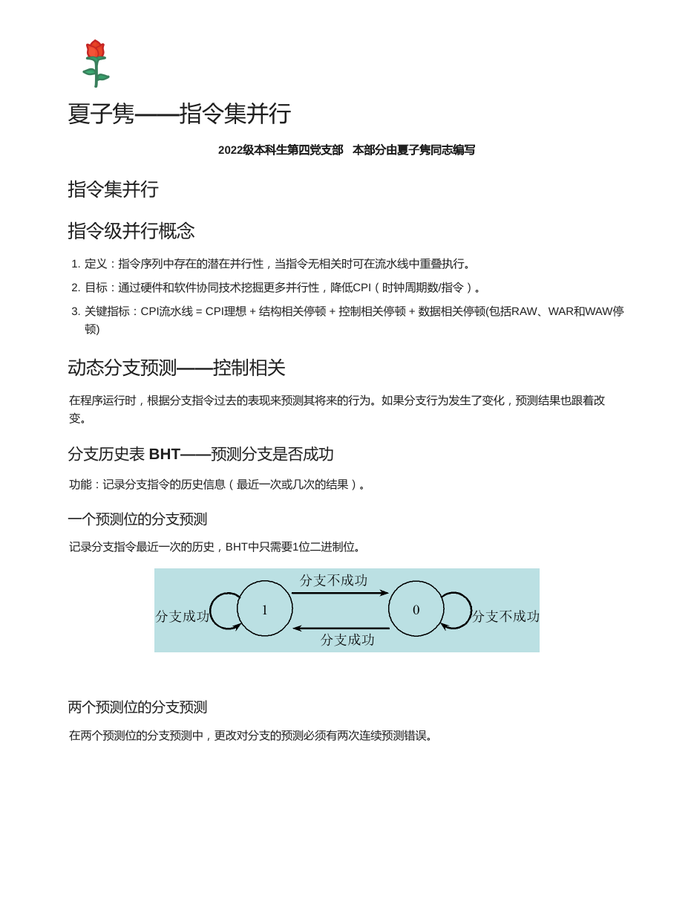
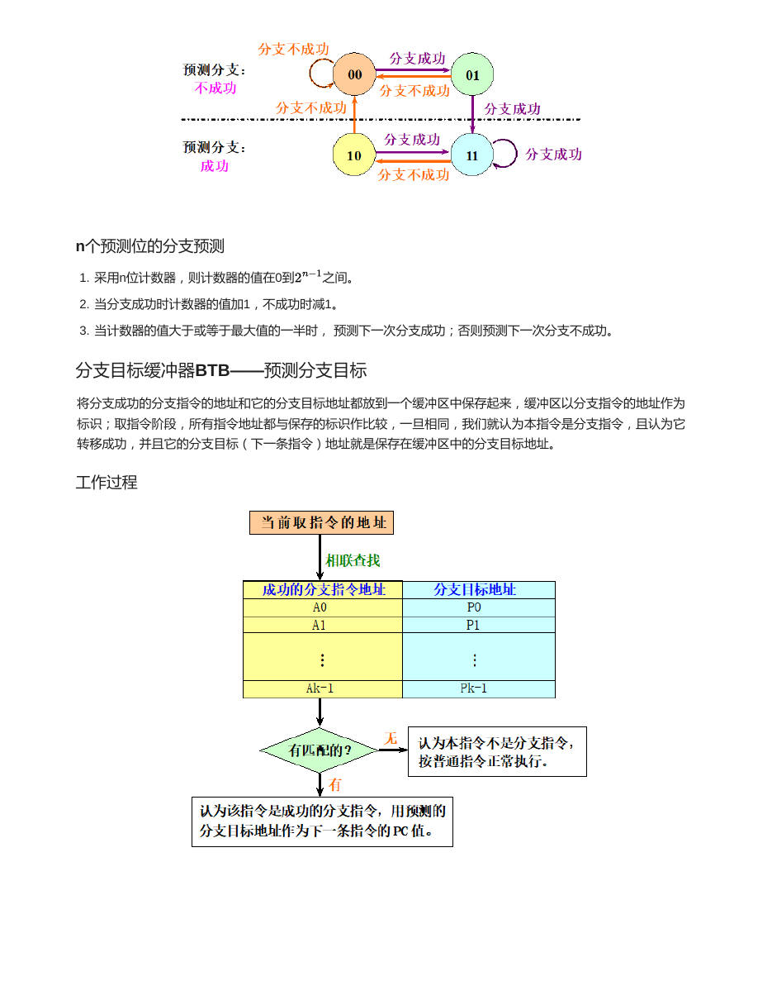
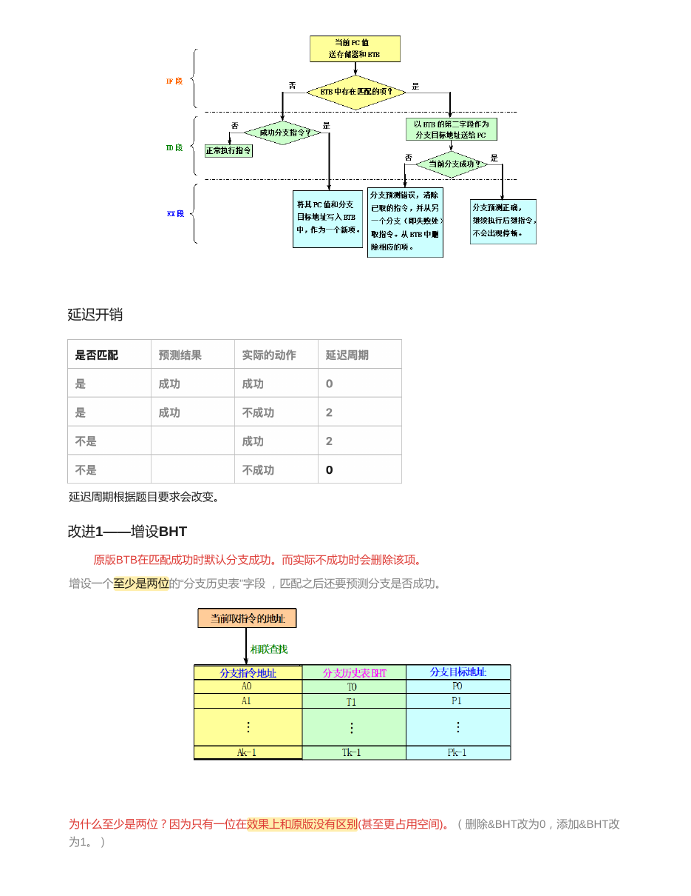
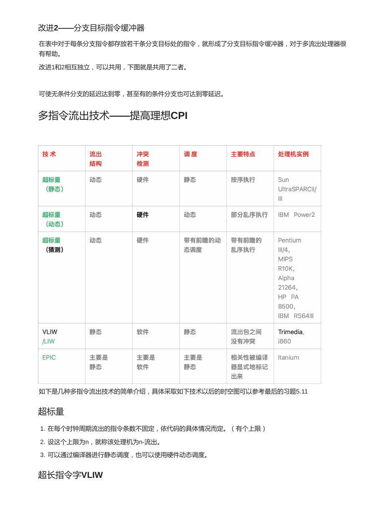
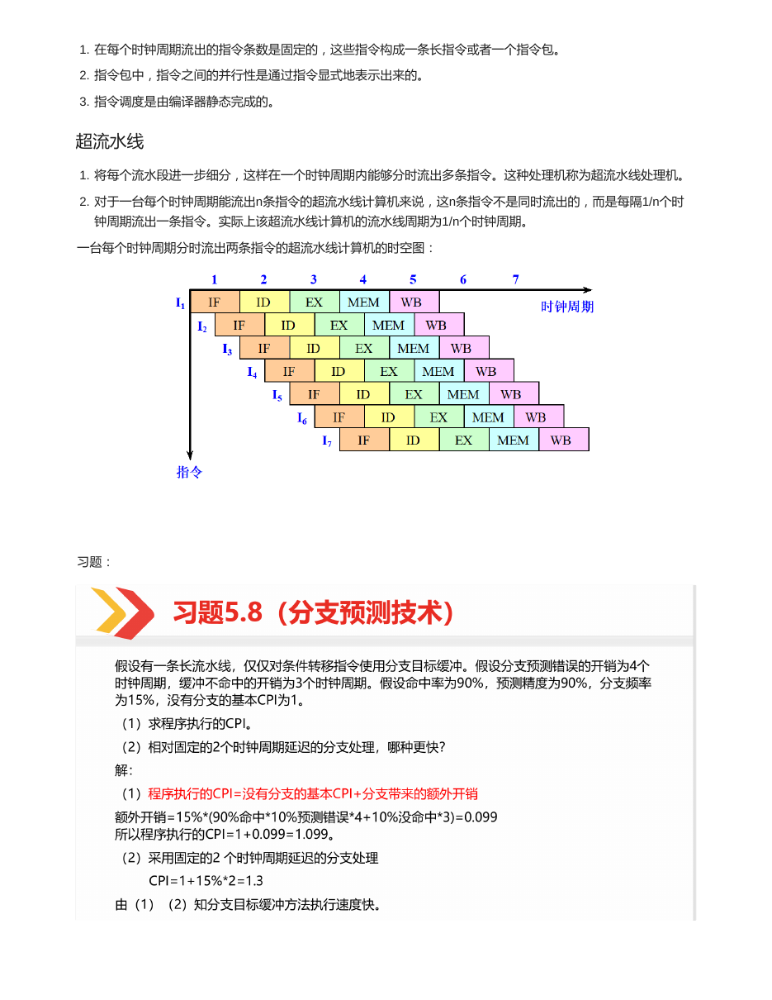
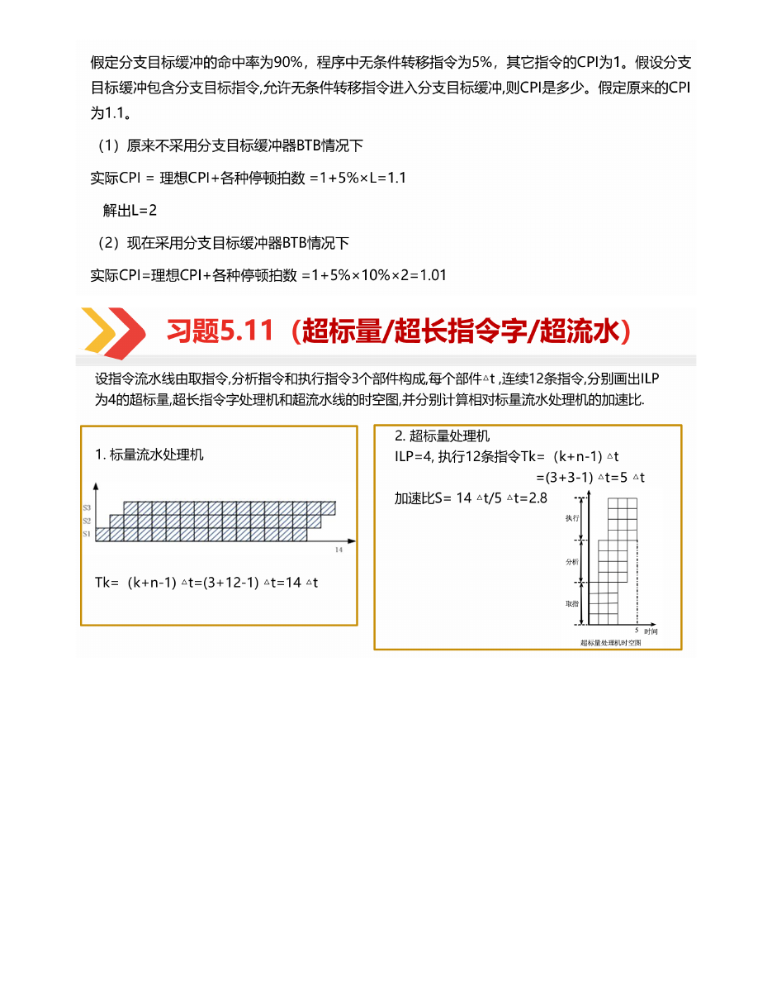
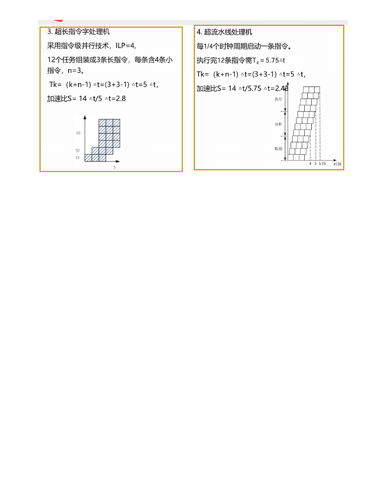

先看主线，再背公式，最后做题
每个专题页都按“概念框架、公式变量、典型题型、原讲义对照、自测问题”组织。复习时从左侧目录跳转，遇到计算题直接回到高亮公式段。
这一章继续回答“流水线之后还能怎么降 CPI”：动态分支预测减少控制停顿，多指令流出让理想 CPI 小于 1。
每个专题页都按“概念框架、公式变量、典型题型、原讲义对照、自测问题”组织。复习时从左侧目录跳转，遇到计算题直接回到高亮公式段。
7 页原讲义截图可展开核对，适合考前查原表、原图和例题。
正文已经把知识点重新组织；这里保留讲义页面缩略图，方便你在需要时回看原版题目、图和表。



指令级并行 ILP 指指令序列中潜在的并行性。当指令之间没有必须保持的相关关系时，可以让它们重叠执行或同时流出。
本章的很多技术都可以放进这个公式中理解：分支预测减少控制停顿，多指令流出降低理想 CPI，动态调度减少数据相关导致的等待。
BHT，即分支历史表，用来记录分支指令过去一次或多次的执行结果，从而预测下一次分支是否成功。
| 预测器 | 机制 | 特点 |
|---|---|---|
| 1 位预测 | 只记录最近一次结果，成功则预测成功，不成功则预测不成功。 | 简单，但循环边界容易连续错两次。 |
| 2 位预测 | 用 2 位饱和计数器表示强/弱成功、强/弱不成功。 | 需要连续两次预测错误才改变方向，更稳定。 |
| n 位预测 | 计数器范围为 0 到 2^n - 1，成功加 1，不成功减 1。 | 计数值大于等于中间阈值则预测成功。 |
BTB，即分支目标缓冲器，用分支指令地址作为标识，保存该分支成功时的目标地址。取指阶段一旦 PC 与 BTB 中的标识匹配，就可以直接给出目标地址，减少等待。
这条分支大概率跳不跳？
如果跳，目标地址在哪里？
原版 BTB 命中时往往默认分支成功；改进方案是在 BTB 中增设至少 2 位的 BHT 字段，命中后仍要判断是否真的预测成功。
分支目标指令缓冲器不只保存目标地址，还保存分支目标处的若干条指令。这样在取指阶段就能直接提供目标指令，对多流出处理器尤其有帮助。
| 技术 | 流出方式 | 调度责任 | 复习关键词 |
|---|---|---|---|
| 超标量 Superscalar | 每周期可流出多条，条数不固定但有上限。 | 可静态调度，也可硬件动态调度。 | 硬件复杂，灵活。 |
| 超长指令字 VLIW | 每周期流出固定数量，打包成长指令或指令包。 | 主要由编译器静态完成。 | 硬件相对简单，依赖编译器。 |
| 超流水线 Superpipeline | 把流水段继续细分，一个时钟周期内分时流出多条。 | 仍沿流水线节拍推进。 | 不是同时流出，而是每隔 1/n 周期流出一条。 |
高性能处理器还会使用乱序执行、寄存器重命名、重排序缓冲 ROB 等机制。它们的目标是在保持程序最终语义正确的前提下，让已经准备好的指令先执行。
理想 CPI 小于 1 并不代表实际一定小于 1，因为分支错误、访存失效、相关等待都会把 CPI 加回来。
| 预测器 | 状态更新 | 题型做法 |
|---|---|---|
| 1 位 BHT | 上次成功则预测成功，上次失败则预测失败。 | 按分支实际序列逐次改位。 |
| 2 位 BHT | 饱和计数器：成功加 1，失败减 1。 | 计数器高半区预测成功，低半区预测失败。 |
| n 位 BHT | 范围 0 到 2^n - 1。 | 值 >= 2^(n-1) 预测成功，否则预测失败。 |
若状态编码为 00 强不成功、01 弱不成功、10 弱成功、11 强成功，初始 10，实际序列为 成功、成功、失败、成功：
只有当连续错误把状态推过中线，预测方向才会改变。
| 题目问法 | 回答抓手 |
|---|---|
| 为什么超标量复杂？ | 硬件要动态判断相关、选择可流出指令、分配执行部件。 |
| 为什么 VLIW 依赖编译器？ | 并行性在指令包中显式表示，编译器静态调度。 |
| 超流水线和超标量区别？ | 超流水线是分时流出，超标量是同一周期多条同时流出。 |
假设有一条长流水线，仅仅对条件转移指令使用分支目标缓冲。分支预测错误的开销为 4 个时钟周期，缓冲不命中的开销为 3 个时钟周期。假设命中率为 90%，预测精度为 90%，分支频率为 15%，没有分支的基本 CPI 为 1。
额外开销 = 15% x (90% x 10% x 4 + 10% x 3) = 0.099，所以 CPI = 1.099。
固定 2 周期延迟的 CPI = 1 + 15% x 2 = 1.3，因此分支目标缓冲方案更快。
假定分支目标缓冲的命中率为 90%，程序中无条件转移指令为 5%，其它指令 CPI 为 1。假设分支目标缓冲中包含分支目标指令，允许无条件转移指令进入分支目标缓冲，问 CPI 是多少？假定原来的 CPI 为 1.1。
不采用 BTB 时：1 + 5% x L = 1.1，得 L = 2。
采用 BTB 后，只有 10% 未命中仍付出 2 周期开销：CPI = 1 + 5% x 10% x 2 = 1.01。
设指令流水线由取指令、分析指令和执行指令 3 个部件构成，每个部件需 Δt。连续执行 12 条指令，分别画出 ILP 为 4 的超标量处理机、超长指令字处理机和超流水线处理机的时空图，并分别计算相对于标量流水处理机的加速比。
标量流水处理机：Tk = (3 + 12 - 1)Δt = 14Δt。
超标量处理机：ILP = 4，12 条指令组成 3 组，Tk = (3 + 3 - 1)Δt = 5Δt，S = 14/5 = 2.8。
超长指令字处理机：同样打包成 3 条长指令，Tk = 5Δt，S = 2.8。
超流水线处理机：每 1/4 个时钟周期启动一条指令，执行 12 条指令需 5.75Δt，S = 14/5.75 ≈ 2.43。
合上正文后先试着口答，再展开看答案。能把这些问题讲清楚，本章主线基本就稳了。
它利用运行时历史信息更新预测状态，可以适应循环和程序实际行为。
BHT 预测分支是否成功；BTB 缓存分支目标地址，让预测成功时更快取到目标指令。
它需要连续两次相反结果才改变强预测方向，能减少循环末尾一次失误造成的来回翻转。
超标量主要靠硬件动态发现并发射多条指令；VLIW 主要靠编译器静态打包固定数量指令。
因为一个周期可以流出多条指令，若每周期平均完成 m 条，理想 CPI 约为 1/m。
下面是原资料的页面渲染图，正文复习完后可以展开对照图、公式和例题。




{kind=link}
{kind=link}
{kind=link}